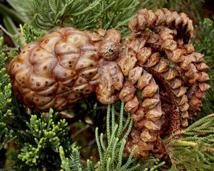

 The Pacific Northwest Tree Octopus is a species of cephalopod native to the Hood Canal in Washington State. It is a tree-dwelling subspecies of octopus that lives in the temperate rainforests of the west coast of North America. It has adapted to live amphibiously, only migrating to the Hood Canal during breeding season, where it finds a mate. Males fertilize the females and then leave the females to find an aquatic home for their eggs. Their skin has adapted to live in the moist environment of temperate rainforests without dessicating and drying out for extended periods of time.